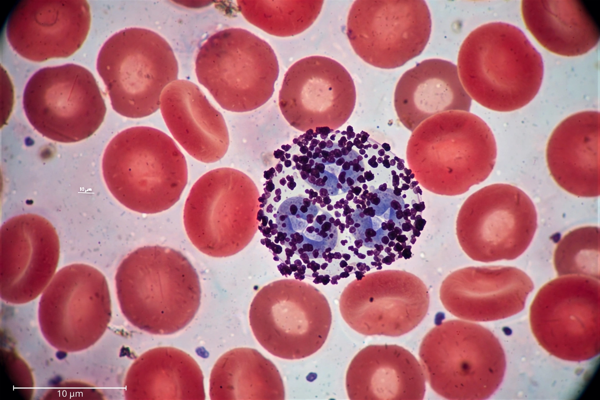

Basophil
Basophils are a type of white blood cell. Along with eosinophils and neutrophils, they are classified as granulocytes, named for the prominent granules in their cytoplasm. Basophils are the least common of the granulocytes, representing about 0.5% to 1% of circulating white blood cells, yet they are the largest type of granulocyte. They are responsible for inflammatory reactions during an immune response and are involved in acute and chronic allergic diseases including asthma, allergic rhinitis and anaphylaxis.
 | |
| System | Immune system |
|---|---|
| Precursor | Haematopoietic stem cells in bone marrow |
| Proportion | 0.5–1% of white blood cells |
| Key contents | Histamine, heparin, proteoglycans |
Structure
Basophils measure about 10–14 micrometres in diameter. Their cytoplasm contains large, water-soluble granules that stain dark blue-purple with basic dyes such as haematoxylin (hence the name, "base-loving"). The granules are so numerous that they often obscure the cell's bilobed nucleus. Because the granules dissolve in water, they may appear washed out in routinely prepared blood smears.
Function
Basophils appear in many kinds of inflammatory reactions, particularly those that cause allergic symptoms. They contain anticoagulant heparin, which prevents blood from clotting too quickly, and the vasodilator histamine, which promotes blood flow to tissues. Like mast cells — their tissue-resident counterparts — basophils express the high-affinity IgE receptor FcεRI on their surface. When IgE bound to this receptor is cross-linked by allergen, the cell degranulates, releasing histamine, leukotrienes and cytokines such as interleukin-4 and interleukin-13, which help coordinate responses to helminth parasites and drive allergic inflammation.
Clinical significance
An abnormally high basophil count is called basophilia and may be seen in myeloproliferative disorders such as chronic myeloid leukaemia, as well as in allergic reactions, inflammation and hypothyroidism. A low count, basopenia, is difficult to detect because basophils are normally so few, but may occur during infections, acute allergic reactions or hyperthyroidism. The basophil activation test, which measures upregulation of markers such as CD63 after allergen exposure, is used in the investigation of allergy.
History
Basophils were first described in 1879 by Paul Ehrlich, who had earlier identified mast cells and developed the staining techniques that distinguished the blood granulocytes from one another.
See also
Categories: Granulocytes · Human cells · Immunology